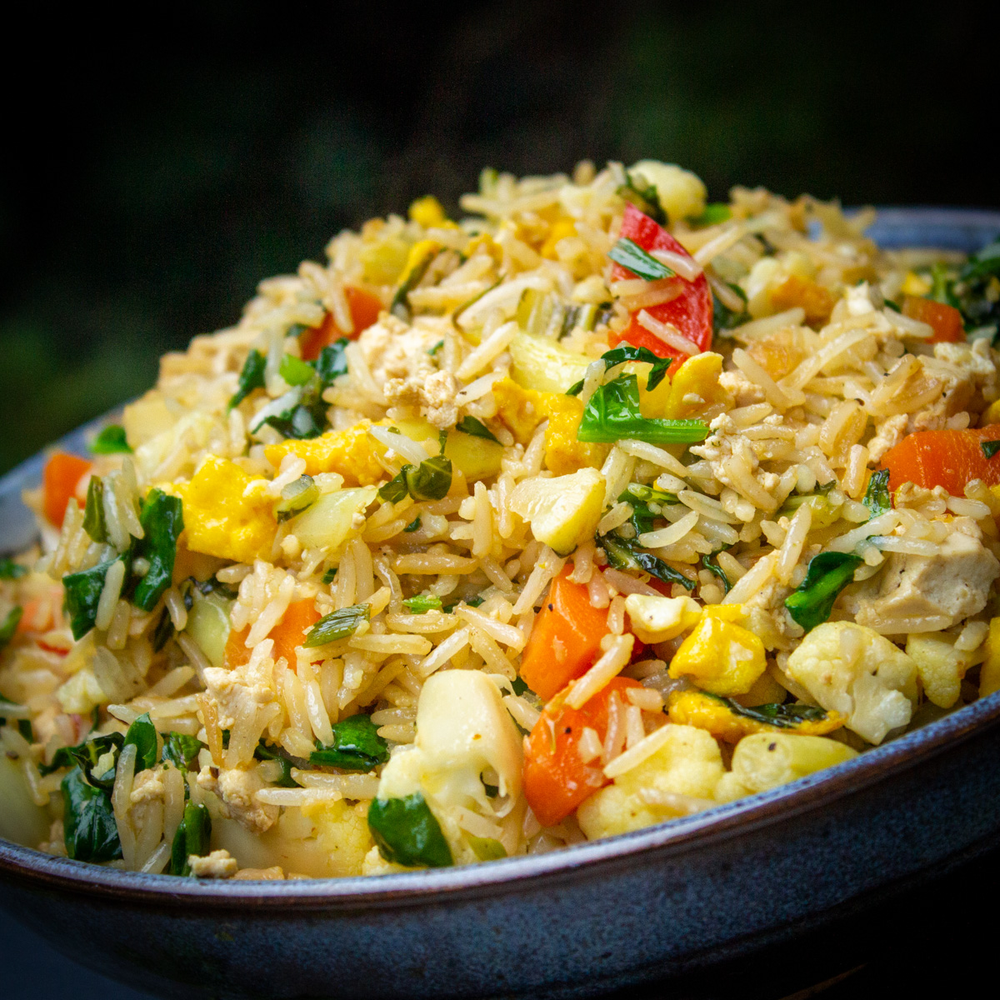

- Used in Vegetable Fried Rice, the previous recipe
- Makes 4 cups :)
Ingredients

- 1 cup long grain rice
- 2 tbsp oil
- 1 tsp salt
Instructions
- Wash rice thouroughly and soak in 3 cups of water for 30 mins; drain and keep aside.
- Boil 6-8 cups of water, add salt and 1 tbsp oil.
- Add rice to boiling water; cook till rice is 85% cooked.
- Pour into a colander and drain; pour cold water on it.
- Let all water drain out ensuring that rice does not have any moisture.
- Add 1 tbsp oil and toss juice in it.
- Spread cooked rice on flat surface till it cools.
- Use as required.